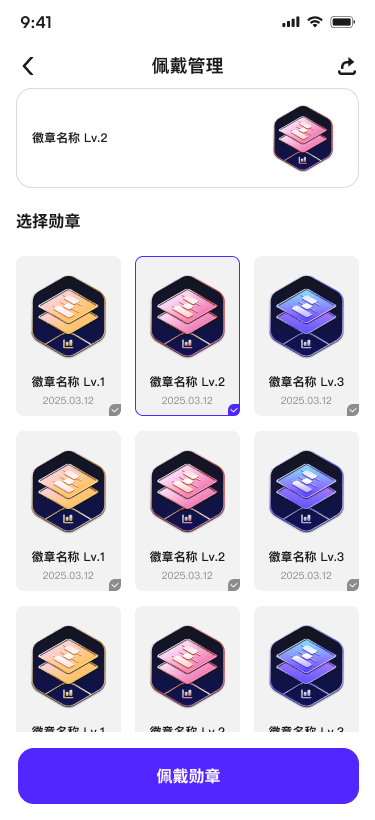
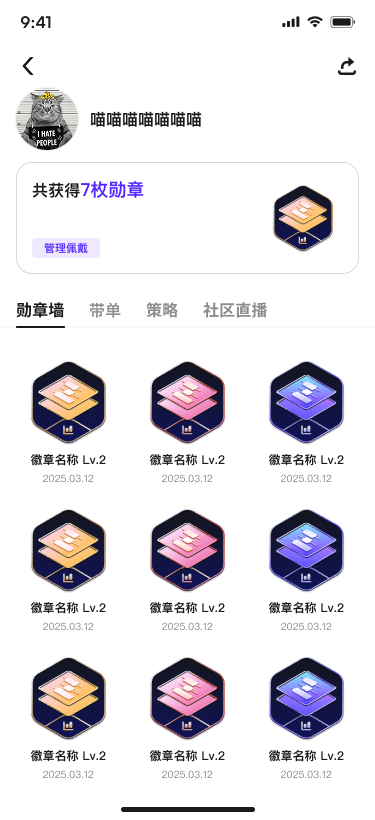
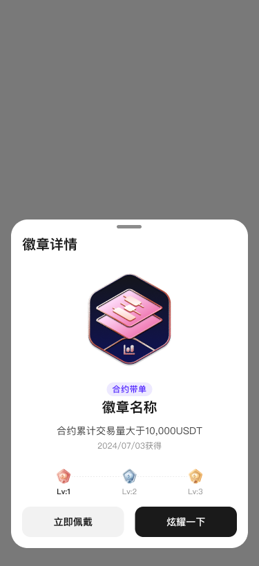
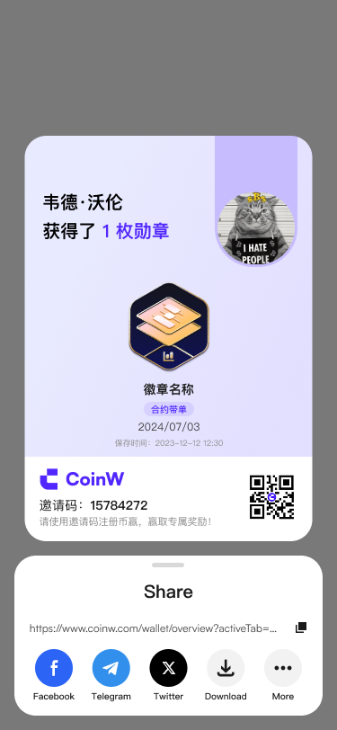

V1 社区次日留存仅 18%，大量用户进入首屏后很快离开；创作者也因为发布后缺少反馈而降低更新频率。
COMMUNITY · 2025–2026 · COINW
社区功能
改版
主导 CoinW 社区模块从 V1 到 V3 的迭代设计，重构内容消费路径、创作者激励、互动组件与通知机制，连接社区参与和交易场景。
04 / Complete Case StudyScroll to explore
01 / Overview
让内容消费与创作反馈形成闭环
问题不在功能数量，而在内容分发与创作者激励同时失效。设计需要兼顾消费者找到好内容，以及创作者获得正向反馈。
02 / Process
从数据诊断到内容生态
数据诊断
分析行为漏斗，定位首屏内容选择困难和发布后反馈不足。
内容分发
将时间流升级为兴趣与热度混合流，并增加垂直频道入口。
激励体系
设计创作积分与徽章系统，将阅读、互动和贡献转化为可感知反馈。
互动升级
重构评论、快捷反应、分享卡和行情关联，降低互动门槛。
通知分级
按持仓相关、关注动态和活动信息分级，支持精细配置。
03 / Screens
真实产品界面




04 / Highlights
三处关键决策
兴趣引导
首次进入通过兴趣选择建立冷启动内容流，减少“不知道看什么”。
创作者主页
用徽章、粉丝、活跃度与历史表现建立可感知的创作者身份。
行情内容卡
帖子关联实时行情和交易对，让内容消费自然连接产品行动。
05 / Results
上线后的核心指标
+52%社区日活用户
3.2x内容发布量
+19%30 日留存率
4.5App Store 评分
06 / Insight
社区是双边市场：消费者需要好内容，创作者需要正向反馈。设计必须同时修复两侧体验，生态才能持续运转。